Modèles de sites WordPress
Six modèles issus de mon kit vitrine WordPress : thème bloc léger, pages légales incluses, formulaire de contact, responsive. Chaque modèle se personnalise à votre activité (textes, photos, couleurs).
Restaurant
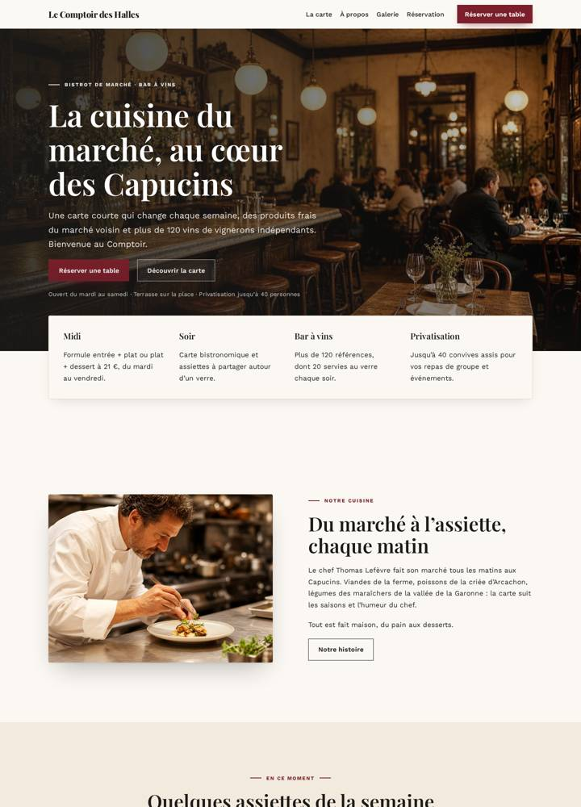
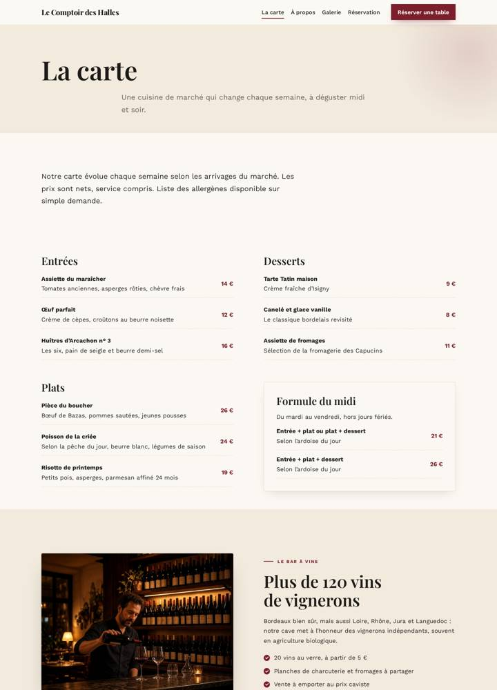
Artisan
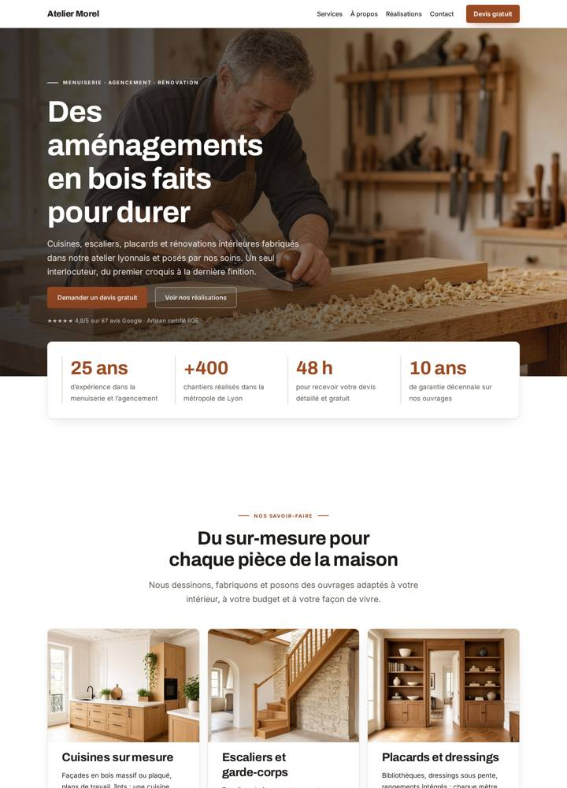
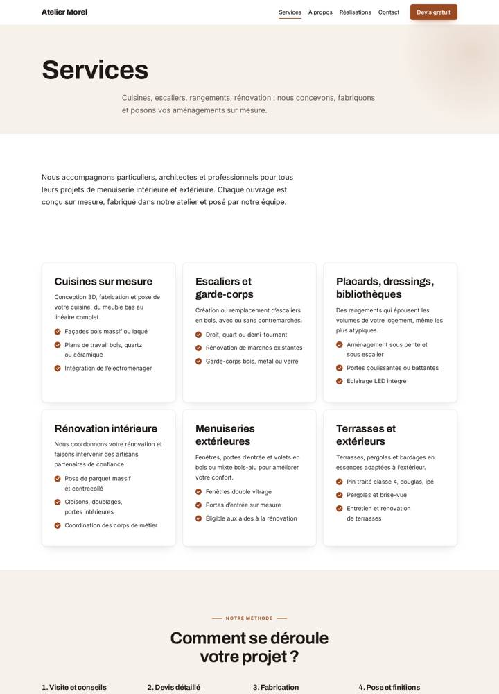
Consultant
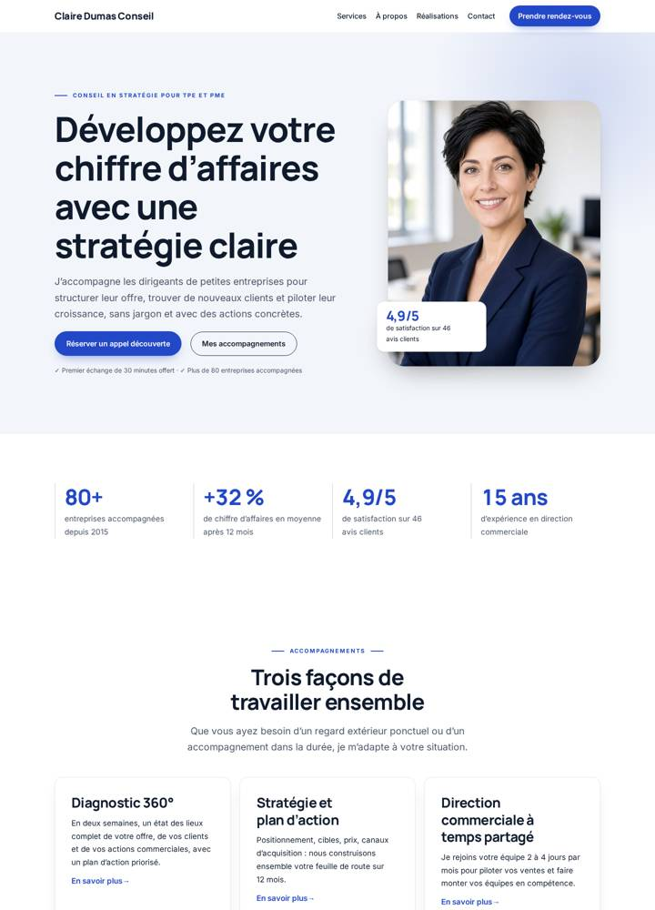
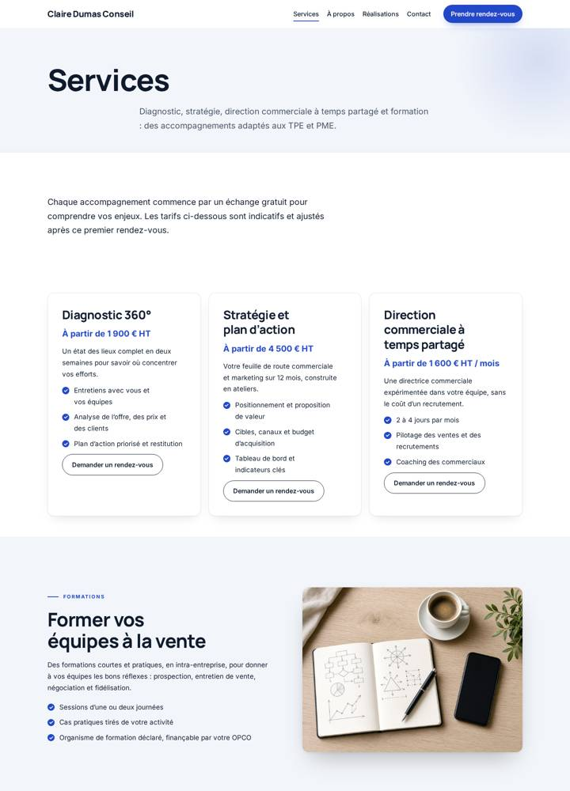
Coiffure / esthétique
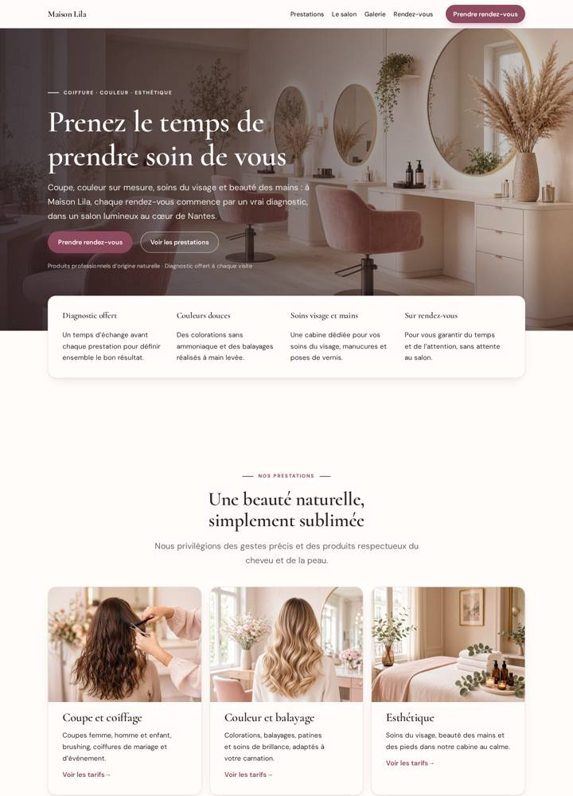
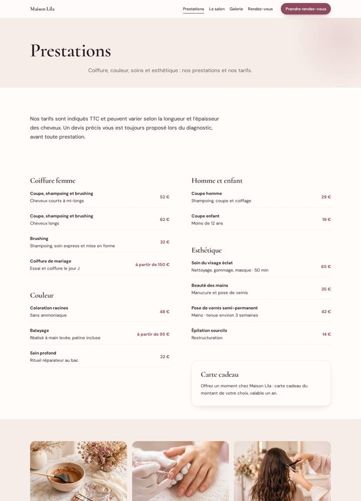
Santé / bien-être
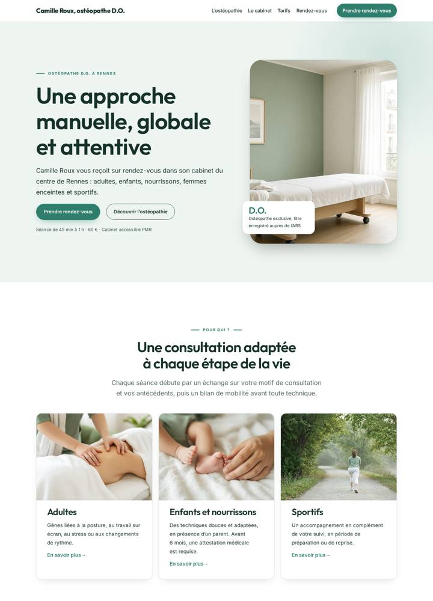
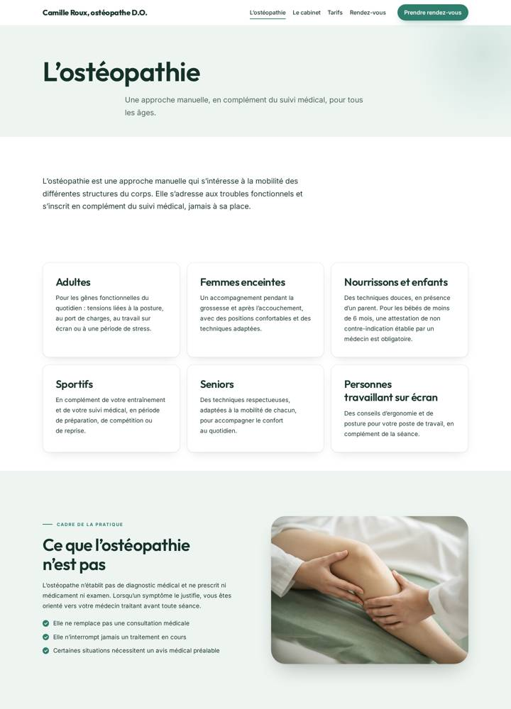
Immobilier
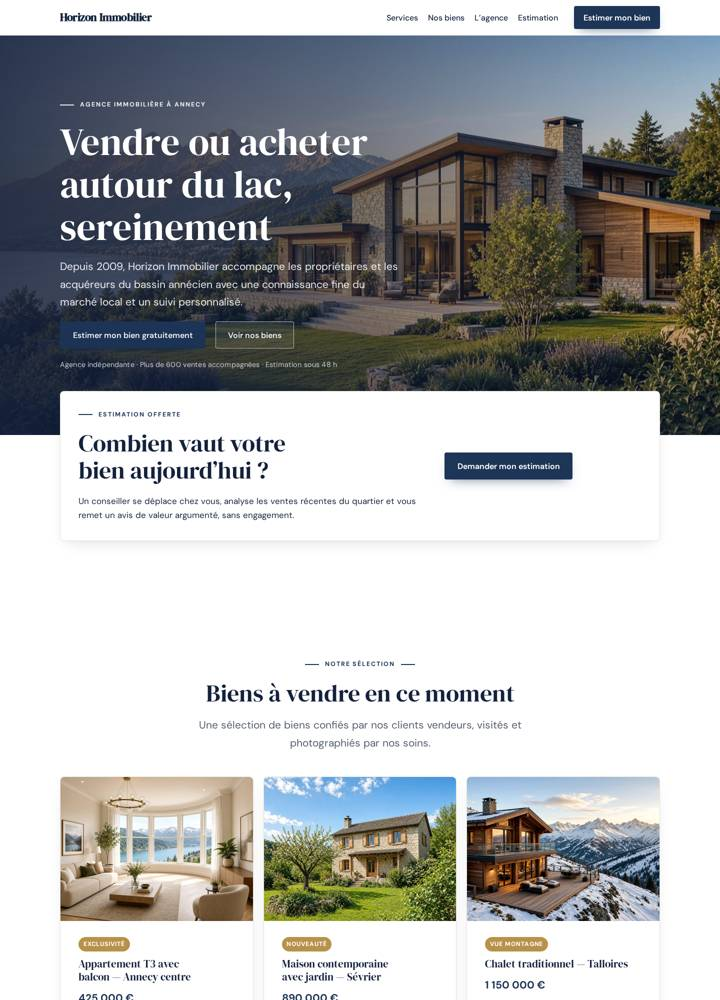
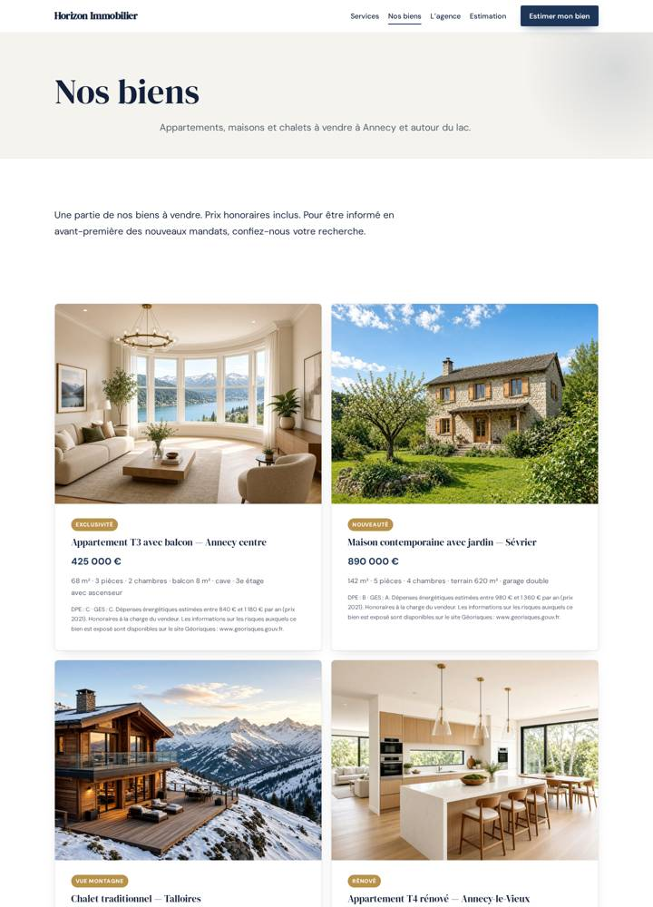
Cliquez sur une capture pour l’agrandir.
Un projet en tête ?
Décrivez votre besoin sur Codeur : je réponds rapidement avec une proposition claire, un prix fixe et un délai.
Me contacter via Codeur